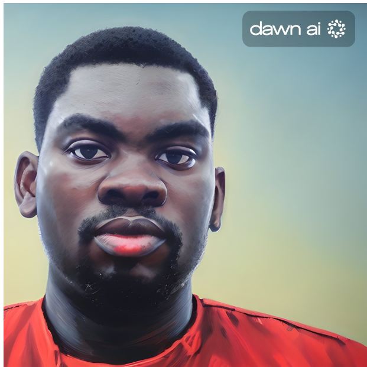

Farlodun Otega

Summary
My names Segun and i'm an hardworking and dedicated individual with a passion for learning new things and creativity.
Education
- Primary Education: Saint Isabel Nursery And Primary School, Eleyele, Ibadan (2002-2010)
- Secondary Education: Saint Isabel Comprehensive Model College, Eleyele, Ibadan (2010-2016)
- Bachelors Degree of Science, Mechanical Engineering-Obafemi Awolowo University, Ile-Ife (2017-2024)
Work Experience
- Engineering Maintenance Intern at Radio Nigeria
January 2020-March 2020
- Assisted Supervisors and other technicians with carrying out maintenance on company powerplant
- Assisted Supervisors and other technicians in carrying out maintenance on A/C units
- Assisted Supervisors and other technicians at carrying out repairs on radio broadcasting equipment
- Engineering Maintenance Intern at Fanmilk Nigeria Plc
- Assisted Supervisors and other technicians with carrying out maintenance on company powerplant
- Carried out Preventive Maintenance on a Yogurt Filling Machine
- Assisted Supervisors in the management of a water treatment plant
- Assisted Supervisors and other technicians in carrying out maintenance on A/C units and Refrigeration Units
- Assisted in the management of an Industrial Refrigeration Plant
- Assisted Supervisors with welding and other workshop activities
- Worked with a supervisor to build a safety railing for passerby
- General Operations Manager, Ife Branch of Lolo Inc.
- General Operations Management for an e-commerce business
- Recruitment for a startup
- Preliminary Testing and logistics
Skills
- Welding
- Novel and Script Writing
- Technical Writing
- Microsoft Word
- Microsoft Excel
- Powerpoint
- CAD with SOLIDWORKS
- Simulation with SOLIDWORKS and ANSYS
- Python Programming for Image Recognition
- Good Organizational Skills and Communication
Awards and Certifications
- Secondary School Certification
- Health, Safety Environment Certification
- CAD with SOLIDWORKS
Other